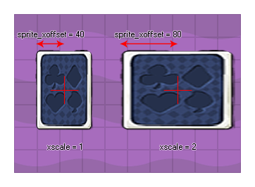

sprite_xoffset
Returns: Real
This read only variable returns the local xoffset (the x
component of the origin as defined in the sprite editor) of the
sprite that has been assigned to the instance. This xoffset is
returned in pixels and will be dependant on the image_xscale, so that (for
example) if a square 32x32 sprite is defined as having the x origin
at 16, when that sprite is scaled by 2 this variable will return
32. If you need the un-scaled xoffset you should use sprite_get_xoffset.

if x - sprite_xoffset < 0
{
x = sprite_xoffset;
}
The above code checks to see if the left edge of the sprite of the instance is outside the room and if it is it moves the instance so that the whole sprite is visible.